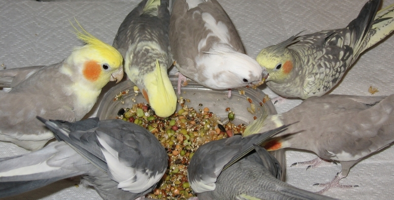
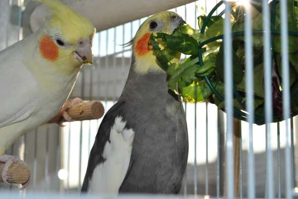
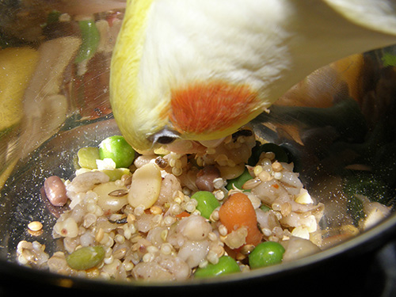

Mundo Ninfa
Alimentación
La dieta de la ninfa depende mucho de su actividad diaria, de su condición de vida y de los alimentos que tengamos al abasto. Es cierto que la ninfa en libertad basa la gran parte de su dieta en las semillas, pero también es cierto que vuela muchos kilómetros y gasta muchísima energía. Esto en cautividad no sucede la mayoría de las veces ni aunque las tengamos en un aviario, con lo cual hay que adaptar su dieta a sus necesidades.
Idealmente, debería basarse en tres pilares:
Ración Seca
Mezcla de semillas de alta calidad
Existen mezclas comerciales especialmente pensadas para psitácidas australianas. Las pipas no forman parte de la dieta natural de las ninfas y son muy ricas en grasas, con lo cual se puede prescindir de ellas totalmente o usarse solo como premio.
Algunas de las semillas usadas en la dieta de las ninfas son las siguientes:
- Mijo
- Alpiste
- Trigo
- Arroz integral
- Avena
- Sorgo
Cuanto más variedad de semillas tenga nuestra mixtura, mejor nutrida estará nuestra ninfa.
Las ninfas son aves que se alimentan principalmente en el suelo. Por lo tanto, la mejor ubicación para el comedero de la ninfa es en el suelo de la jaula, teniendo en cuenta que si se ensucia hay que cambiarlo. Una forma de ofrecer un gran enriquecimiento ambiental para las ninfas es esparcir semillas en el suelo o en el fondo de un aviario de modo que las tengan que ir buscando.
Ración Fresca
La ración fresca de las ninfas está constituida fundamentalmente por verduras, sobre todo por aquellas de hoja verde.
Las ninfas suelen tener predilección por las hojas y podremos observarlo cuando le colguemos una hoja de lechuga con una pinza en la jaula. La mayoría de ninfas, incluso las que están poco acostumbradas a la verdura enseguida sentirán curiosidad y picotearan la hoja.
Algunas verduras que podemos usar en la dieta de nuestra ninfa son las siguientes:
Verduras de hoja: son verduras que nos proporcionan hojas verdes y comestibles. Son la base de la ración fresca de las ninfas
- Lechugas:
- la lechuga es una verdura totalmente inofensiva para la ninfa (no le va a causar diarrea ni absolutamente ningún otro problema) pero es poco nutritiva y llena mucho, con lo cual tendremos una ninfa hipo nutrida y con carencias.
- Acelga
- Rúcula
- Apio
- Espinacas
- Preferiblemente cocidas. Ofrecerlas fuera de la época reproductiva
- Brotes de alfalfa
- Perejil
- Debe ser consumido en cantidades moderadas y en ninfas fuera de periodo reproductivo.
Extras y golosinas:
Las ninfas pueden tomar otros alimentos a modo de extras. Estos alimentos se pueden ofrecer de forma semanal o como premio.
- Pan integral
- Pipas de girasol rayadas de pequeño tamaño
- Cereales integrales sin azucares
- Snacks para loros
- Galletas integrales sin azúcares añadidos
{kind=link}
{kind=link}